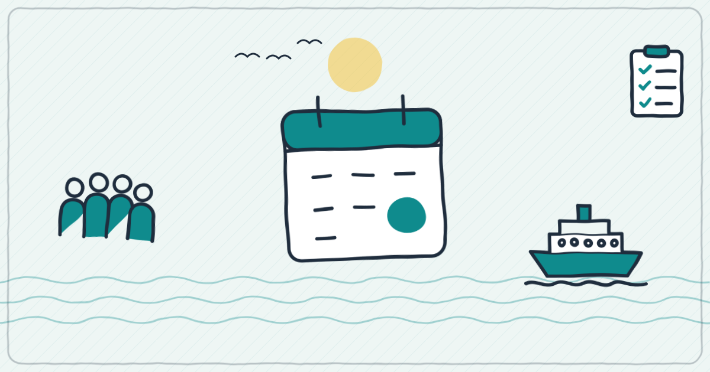

When Is Final Payment Due on a Group Cruise? All Dates
A group cruise has four dates: a deposit to hold the block, a recall date when unsold cabins go back to the line, a names deadline, and final payment, usually 75 to 120 days before sailing. A cabin that misses final payment is cancelled, and a smaller block can lose its perks.

Final payment on a group cruise falls 75 to 120 days before sailing on most lines, with the longer and holiday sailings at the early end. Before that date come three others that catch organisers out: the deposit that holds the block, the recall date when the line takes back unsold cabins, and the date every cabin needs real names. Publish all four to your group on day one.
When is final payment due on a group cruise?
The published final payment dates below are the lines' standard schedules in late 2026. Group contracts often use the same dates, but a contract can set an earlier one, so the contract wins.
| Line | Final payment, days before sailing |
|---|---|
| Royal Caribbean | 75 (up to 4 nights), 90 (5 to 9 nights), 120 (10 nights or more) |
| Celebrity | 90 for all lengths |
| Carnival | 76 (5 days or less), 91 (6 days or more) |
| Norwegian | 60 (5 days or less), 75 (6 days or more), 90 (Hawaii and holiday sailings); group contracts can show 120 |
| Princess | 90 (up to 13 days), 120 (14 days or more); from 2027 sailings, 120 for most lengths |
| Holland America | 90 (13 days or less), 120 (longer and all Asia, Australia and South America) |
| MSC | 75 (up to 4 nights), 90 (5 to 14 nights), 110 (15 nights or more) |
| Disney | 90 (5 nights or less), 120 (6 nights or more) |
Two patterns matter more than the exact numbers. A 10- to 14-night cruise can be due a full month earlier than a seven-night one on the same line, and Christmas, New Year and other holiday sailings are usually pulled forward to 90 days or more.
Everything the group pays before and after this date is in US dollars on most lines, so a Canadian block carries exchange risk between deposit and balance; paying for a cruise in CAD or USD covers the choice.
How much is a group cruise deposit, and when is it due?
There are two deposits, and people confuse them. The group deposit holds the block of cabins in the organiser's name. The cabin deposit is what each couple pays to confirm their own stateroom inside the block.
The group deposit is small or nothing. Royal Caribbean, Holland America and Norwegian hold up to 16 staterooms with no group deposit; beyond that Royal Caribbean and Holland America ask about US$50 a stateroom within 30 days, and Norwegian's published group terms ask US$12.50 a person within 60 days. Carnival asks US$25 a person within 60 days of creating the group, Princess US$25 a berth for groups over 16 people, MSC US$25 a person for groups over 16 staterooms. Celebrity holds standard cabins for US$50 a stateroom but wants a double deposit up front for suites.
The cabin deposit follows the line's normal schedule, with one twist. Norwegian's group terms let a block of 8 to 16 cabins run with no deposit at all, then require the full cabin deposit 120 days before sailing. For a 10-night cruise that is US$400 a person on that date, and any cabin that does not pay is released. Royal Caribbean and Carnival collect the cabin deposit when each guest books, so the money comes in earlier but in smaller pieces.
How many cabins you need for the block to count as a group, and what the free berth is worth, is explained in the 8-cabin rule for group cruises.
When does the cruise line take back unsold group cabins?
A block is borrowed inventory, and the line calls it in on a schedule. Celebrity recalls unsold group cabins 150 days before sailing on cruises of nine nights or more and 120 days on shorter ones. Holland America reviews group space from 150 days out. Carnival recalls after its second deposit date, around 120 to 150 days before departure. Norwegian releases all remaining unconfirmed space at 120 days. Royal Caribbean and Princess review blocks in stages, and any line can take space back sooner if the ship is filling.
Recall is not a penalty; it only affects cabins nobody has confirmed. The problem is the cousin who said "count me in" and never paid a deposit. Their cabin goes back to the line at recall, and on a popular sailing it is resold within days at a higher price, because a cruise fare is only locked once a deposit is paid. Hold a cabin only for people who have paid the cabin deposit, and treat the recall date as a hard deadline, because it is.
When do names have to be on a group cruise booking?
A block can sit under the organiser's name for months, but each cabin needs real passengers before final payment and, on many lines, before that. Norwegian wants final rooming lists 60 days before a cruise of five days or less and 75 days before a seven-night or longer cruise, and reserves the right to ask at 105 days for holiday and special sailings. Lines that bundle air want names when the air is confirmed.
The name is the one on the passport, with the same spelling, plus date of birth and citizenship. An expired passport, a maiden name on the booking and a married name on the passport, or a child added without a date of birth all stall a cabin at the worst time. Ask everyone to photograph the photo page of their passport on the day the block opens; the document rules for Canadians sailing from a US port list what a Canadian needs and which exceptions bite. Name changes after final payment usually cost a fee, and swapping a whole cabin can count as a cancellation.
What happens when one cabin misses a group deadline?
The line is not interested in the group's internal politics. A cabin that misses the cabin deposit date is released. A cabin that misses final payment is cancelled, and any non-refundable part of the deposit is gone. The perks are then counted on the cabins that sailed, not the ones that signed up.
That last point is the real cost. If the free tour conductor berth needs eight paid cabins and the block drops to seven, the organiser pays for their own fare after all, and any group amenities tied to the count can shrink with it. What is negotiable on a group cruise booking explains which perks survive a smaller block and which do not.
The organiser routine that stops it
- On the day the block is confirmed, send one message with all four dates: deposit, recall, names and final payment. Put them in a shared calendar.
- Set your own internal deadline two weeks before each real one, and tell the group only the internal date.
- Keep one list: cabin, lead name, deposit paid, names in, balance paid. Update it the day money moves.
- Remind the group at 30, 14 and 7 days before each internal date.
- Phone anyone still outstanding a week before the real date. A call gets an answer; a fourth group message does not.
- Decide up front what happens to a released cabin: waiting list first, then back to the line.
- Tell everyone to buy cancellation insurance when they pay the cabin deposit, because the penalties start there, not at final payment.
Want this checked for your own sailing? A licensed cruise consultant can price it up and answer questions for free, with no obligation.
Ask a cruise expert →Four dates, one calendar
Group cruises fail on dates, not on price. Write down the deposit, recall, names and final payment dates on the day the block opens, move each two weeks earlier for the group, and keep one list of who has paid what. Do that, and the only deadline anyone notices is sailing day.
Questions people also ask
Is final payment earlier for a group cruise than for an individual booking?
Often it is the same published date, but a group contract can set an earlier one, and some lines pull the whole deposit forward to 120 days out for groups. Read the contract rather than the line's public schedule, and tell the group the earlier of the two.
What happens if one cabin in a group does not pay by final payment?
The line cancels that cabin and keeps whatever part of the deposit is non-refundable. The cabin drops out of the group count, and if the block falls below the group minimum the organiser's tour conductor credit and amenities can shrink or disappear.
Can you add cabins to a group booking after the recall date?
Usually yes, if the ship still has space, but new cabins are added at the fare on sale that day, not the original group rate, and they may not earn the same amenities. Add latecomers before the recall date whenever you can.